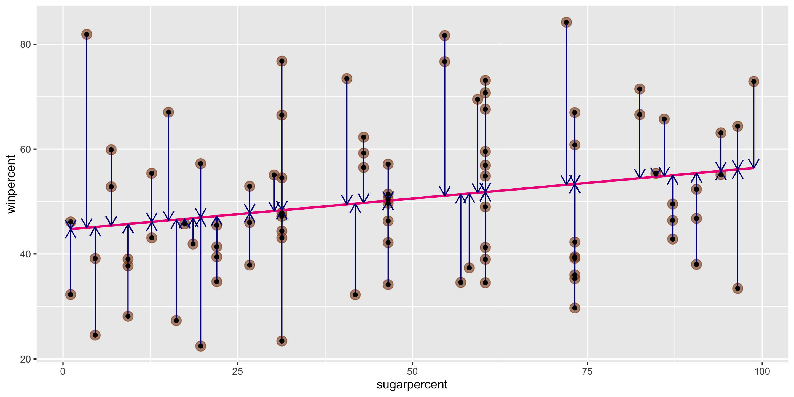

Linear Models II: Accuracy and Assumptions
Megan Ayers
Stat 141 | Fall 2026
Friday, Week 4
Announcements
- Fill out the Week 4 Survey
Goals for Today
- Recall simple linear regression
- Do simple linear regression in R
- Discuss model assumptions for linear regression
- Assess accuracy of linear regression models
- Discuss “extrapolation”
Form of the Model
\[ y = f(x) + \epsilon \]
where \(\epsilon\) represents an error term.
Goal:
Determine a reasonable form for \(f()\). (Ex: Line, curve, …)
Estimate \(f()\) with \(\widehat{f}()\) using the data.
Generate predicted values: \(\widehat y = \widehat{f}(x)\).
Simple Linear Regression Model
\[ y = \beta_0 + \beta_1 x + \epsilon \]
Consider this model when:
Response variable \((y)\): quantitative
Explanatory variable \((x)\): quantitative
- Have only ONE explanatory variable.
AND, \(f()\) can be approximated by a line.
Need to determine the best estimates of \(\beta_0\) and \(\beta_1\).
Distinguishing between the population and the sample
\[ y = \beta_0 + \beta_1 x + \epsilon \]
- Parameters:
- Based on the population
- Unknown then if don’t have data on the whole population
- EX: \(\beta_0\) and \(\beta_1\)
\[ \widehat{y} = \widehat{ \beta}_0 + \widehat{\beta}_1 x \]
- Statistics:
- Based on the sample data
- Known
- Usually estimate a population parameter
- EX: \(\widehat{\beta}_0\) and \(\widehat{\beta}_1\)
Regression goals
Linear regression is used for 2 main tasks:
- Explaining relationships between variables in a data set so that we can infer relationships in the population
- Ex. We observe that a sample of Reed students who sleep more have higher test scores
- Based on this positive relationship in the sample, we might infer that sleep is associated with higher test scores for similar students in general
- We focus most on coefficients
- Predicting values of the response variable based on values of the explanatory variable
- Ex. Using data from 1960-2015, we predict the atmosphere will contain 410 ppm CO2 in 2025
- We focus most on fitted values and residuals
Our Modeling Goal
Recall our modeling goal: predict win percentage by using the sugar percentage variable.
candy <- read_csv("https://raw.githubusercontent.com/fivethirtyeight/data/master/candy-power-ranking/candy-data.csv") %>%
mutate(sugarpercent = sugarpercent*100)
ggplot(data = candy,
mapping = aes(x = sugarpercent,
y = winpercent)) +
geom_point(alpha = 0.6, size = 4,
color = "chocolate4") +
geom_smooth(method = "lm", se = FALSE,
color = "deeppink2")
Method of Least Squares
Want residuals to be small.
Minimize a function of the residuals.
Minimize:
\[ \sum_{i = 1}^n e^2_i \]
Method of Least Squares
After minimizing the sum of squared residuals, you get the following equations:
Get the following equations:
\[ \begin{align} \widehat{\beta}_1 &= \frac{ \sum_{i = 1}^n (x_i - \bar{x}) (y_i - \bar{y})}{ \sum_{i = 1}^n (x_i - \bar{x})^2} \\ \widehat{\beta}_0 &= \bar{y} - \widehat{\beta}_1 \bar{x} \end{align} \] where
\[ \begin{align} \bar{y} = \frac{1}{n} \sum_{i = 1}^n y_i \quad \mbox{and} \quad \bar{x} = \frac{1}{n} \sum_{i = 1}^n x_i \end{align} \]
- Note: A large slope does not necessarily indicate strong correlation, and a small slope does not necessarily indicate lack of correlation.
Method of Least Squares
Then we can estimate the whole function with:
\[ \widehat{y} = \widehat{\beta}_0 + \widehat{\beta}_1 x \]
Called the least squares line, regression line, or the line of best fit.
Constructing the Simple Linear Regression Model in R
We can use the lm() function to construct the simple linear regression model in R and the get_regression_table() function from moderndive to interpret it.
What is the fitted model form?
\[\begin{align*} \widehat{y} &= \widehat{\beta_0} + \widehat{\beta_1} \times x_{sugarpercent} \\ &= 44.6094 + 0.1192 \times x_{sugarpercent} \end{align*}\]
We can use the lm() function to construct the simple linear regression model in R and the get_regression_table() function to interpret it.
Q: How do we interpret the coefficients?
Coefficient Interpretation
\[\begin{align*} \widehat{y} &= \widehat{\beta_0} + \widehat{\beta_1} \times x_{sugarpercent} \\ &= 44.6094 + 0.1192 \times x_{sugarpercent} \end{align*}\]
We need to be precise and careful when interpreting estimated coefficients!
Intercept: We expect/predict \(y\) to be \(\widehat{\beta}_0\) on average when \(x = 0\).
Slope: For a one-unit increase in \(x\), we expect/predict \(y\) to change by \(\widehat{\beta}_1\) units on average.
These interpretations are non-specific to the context of our model, but when we are interpreting coefficients, we always need to interpret the coefficients in context
Coefficient Interpretation: In Context
\[\begin{align*} \widehat{y} &= \widehat{\beta_0} + \widehat{\beta_1} \times x_{sugarpercent} \\ &= 44.6094 + 0.1192 \times x_{sugarpercent} \end{align*}\]
Intercept: We expect/predict a candy’s win percentage to be 44.6094 on average when their sugar percentage is 0.
Slope: For a one-unit increase in sugar percentage, we expect/predict the win percentage of a candy to change by 0.1192 units on average.
Prediction, Interpolation, and Extrapolation
1 2 3
47.23269 53.79082 62.49524 - We didn’t have any treats in our sample with a sugar percentage of 77%. Can we still make this prediction?
- Called interpolation
- We didn’t have any treats in our sample with a sugar percentage of 150%. Can we still make this prediction?
- Called extrapolation
Cautions
Careful to only predict values within the range of \(x\) values in the sample.
Make sure to investigate outliers: observations that fall far from the cloud of points.
- High leverage points: extreme predictor value
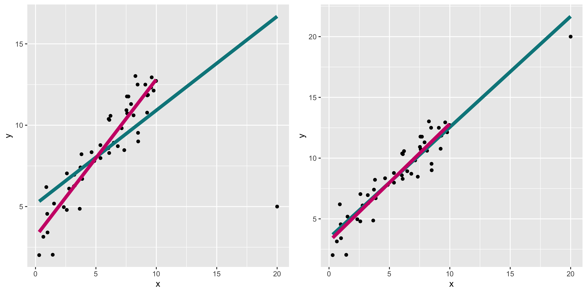
A closer look at our model
# A tibble: 2 × 7
term estimate std_error statistic p_value lower_ci upper_ci
<chr> <dbl> <dbl> <dbl> <dbl> <dbl> <dbl>
1 intercept 44.609 3.086 14.455 0 38.471 50.748
2 sugarpercent 0.119 0.056 2.145 0.035 0.009 0.23 \[\begin{align*} \widehat{y} &= \widehat{\beta_0} + \widehat{\beta_1} \times x_{sugarpercent} \\ &= 44.6094 + 0.1192 \times x_{sugarpercent} \end{align*}\]
What assumptions have we made?
Linear Regression Assumptions
We can always find the line of best fit to explore data, but…
To make accurate predictions or inferences, certain conditions should be met.
To responsibly use linear regression tools for prediction or inference, we require:
Linearity: The relationship between explanatory and response variables must be approximately linear
- Check using scatterplot of data, or residual plot
Independence: The observations should be independent of one another.
- Can check by considering data context, and
- sometimes by looking at scatterplots/residual plots
Normality: The distribution of residuals should be approximately bell-shaped, unimodal, symmetric, and centered at 0 at every “slice” of the explanatory variable
- Simple check: look at histogram of residuals
- Better to use a Q-Q plot
Equal Variability: Variance of residuals should be roughly constant across data set. Also called “homoscedasticity”. Models that violate this assumption are sometimes called “heteroscedastic”
- Check using residual plot.
A cute way to remember this: “LINE”
Linearity
Independence
Normality
Equal Variability
- We assess these using diagnostic plots (
yvsxscatterplot, residual plot, residual histogram, q-q plot) - Later in the course, we’ll learn why I, N, and E are required for inference
Assessing conditions: Linearity
Linearity: The relationship between explanatory and response variables must be approximately linear
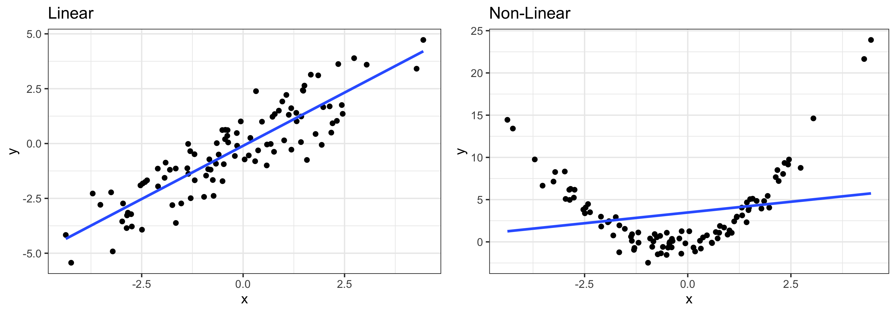
- Points should be evenly distributed above and below the regression line at each “slice” of x
- If data is non-linear:
- Slope does not adequately describe relationship and predictions can be very inaccurate
- More advanced modeling techniques should be used instead (take STAT 243)
Assessing conditions: Linearity
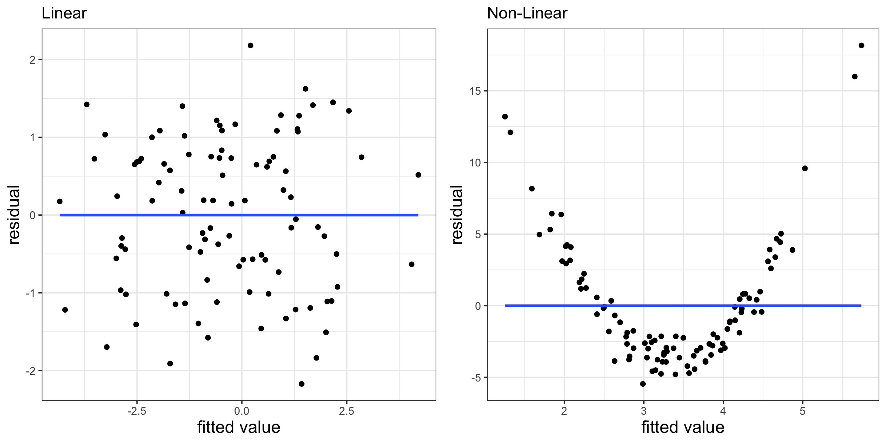
- Residual plots can also be useful for checking linearity
- These plot model residuals against the fitted values
- We don’t want to see any trends here
Assessing conditions: Linearity (Code Example)
library(moderndive)
# Creating the model
lm1 <- lm(data = my_df, y1 ~ x)
# *** Pulling out model inputs, residuals, and fitted values ***
res1 <- get_regression_points(lm1)
# Plotting residuals vs fitted values
(g1 <- ggplot(res1, aes(x = y1_hat, y = residual)) +
geom_point() +
theme_bw() +
geom_smooth(method = "lm", se = F) +
labs(x = "fitted value", y = "residual", title = "Linear"))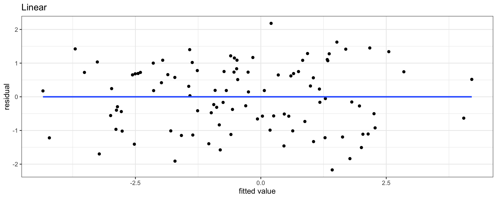
Assessing conditions: Independence
Independence: The observations should be independent of one another
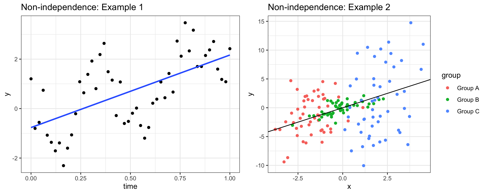
- If observations are not independent, inference about the population may be misleading.
- We usually assess independence qualitatively
- Are observations inherently connected? (Beyond variables in the model)
Assessing conditions: Normality (of residuals)
Normality: The distribution of residuals should be bell-shaped, unimodal, symmetric, and centered at 0 at every “slice” of the explanatory variable
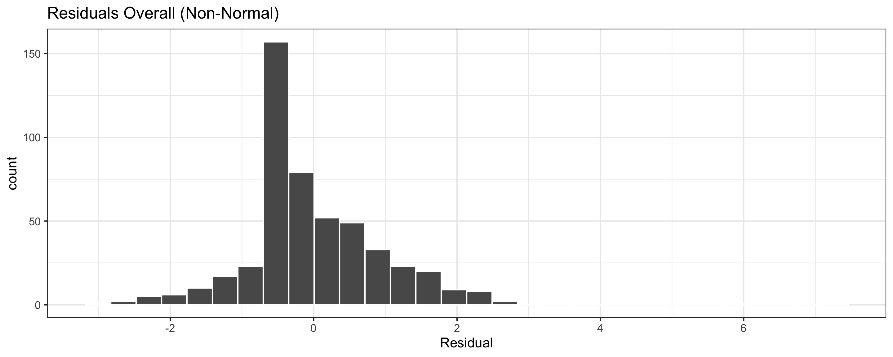
Assessing conditions: Normality (of residuals)
Normality: The distribution of residuals should be bell-shaped, unimodal, symmetric, and centered at 0 at every “slice” of the explanatory variable

If residuals are non-Normal…
- Some predictions can be very inaccurate
- Inference about the population may be misleading
Assessing conditions: Normality (of residuals)
Normality: The distribution of residuals should be “Normal”
Assessing conditions: Equal variability (of residuals)
Equal Variability: Variance of residuals should be approximately constant across the data
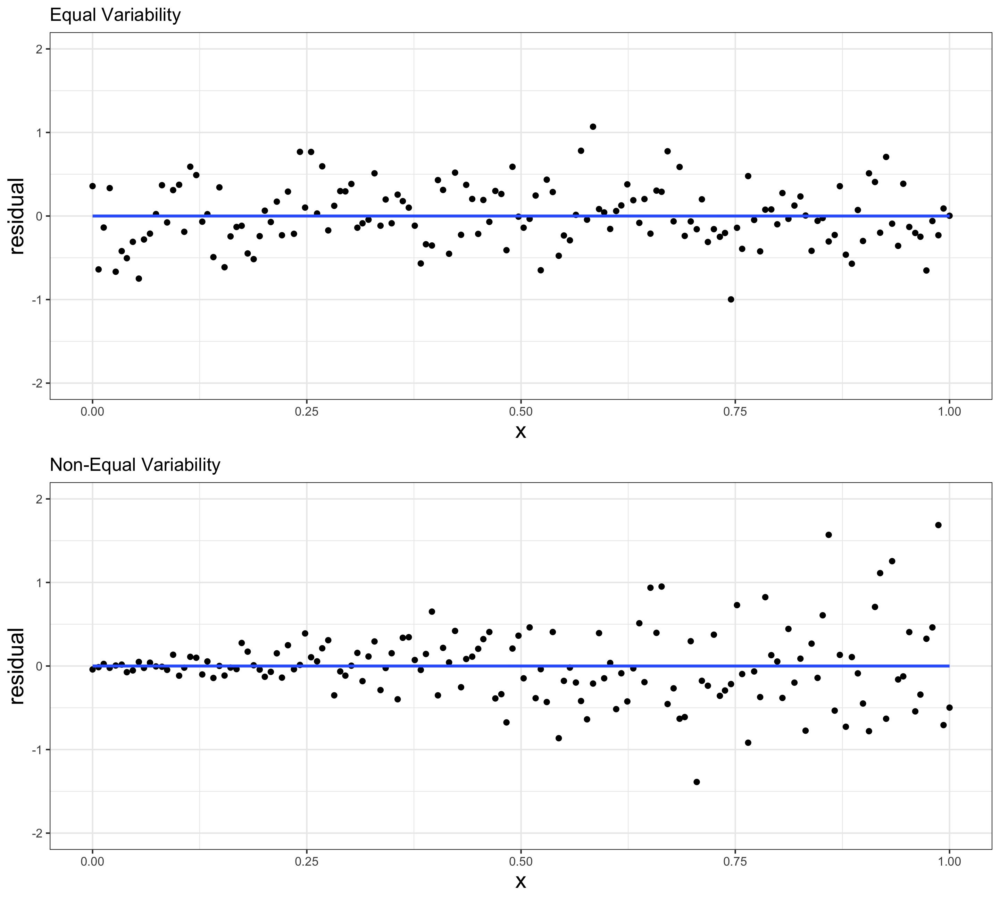
- Residual plots are also very useful for this
- If equal variability isn’t met:
- Inference about the population may be misleading
- (Potential) outliers in high-variability range are more influential
Another example: high leverage points
Remember the outlier example:
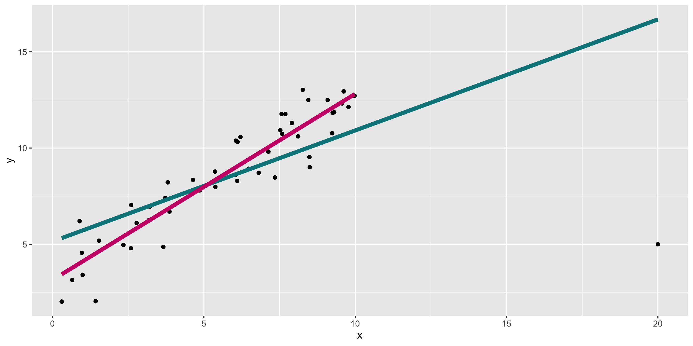
What do diagnostics look like when we fit the teal model?
Diagnosing the model
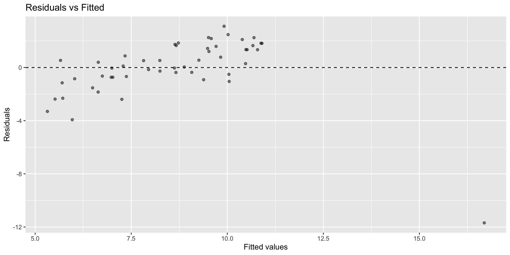
- In this case, can already see the outlier in the residual vs fitted plot.
What to do with high leverage points?
- Depends on context
- It may be reasonable to remove them and refit the model
- If we believe the data is the result of an error
- If we are most focused on prediction for non-outliers, or if our population of interest does not include the outlier
- But we shouldn’t remove outliers just because we don’t like the results that they produce
- Especially if our goal is descriptive or explanatory, and the outlier represents a valid data point
Recall our candy simple linear regression model
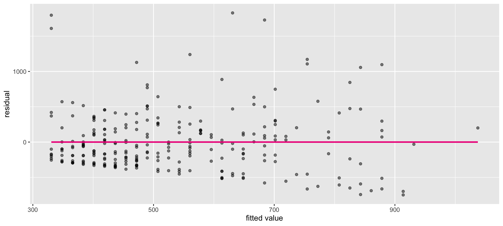
Let’s check if this meets the LINE assumptions
Q: First, what does this graph tell us about Linearity?
Residual vs. fitted plot

Checking normality: residual histogram

- Normality: 🤔
- Not horrible but not great
- We’ll look at a Q-Q plot to further assess!
Checking normality: Q-Q plot
- Normality: ❓
Suppose LINE assumptions are met. Is the model good?
Coefficient of Determination, or \(R^2\)
A common measure of the strength of a linear model is the coefficient of determination \(R^2\), (aka “R-squared”).
- \(R^2\) is always between 0 and 1 (for the linear models we discuss)
- It measures the proportion of variation in the response variable \(y\) that is explained by the linear model
\[ R^2 = \frac{ \overbrace{s_y^2 - s_{e}^2}^{\textrm{Variation in Y explained by X}}} { \underbrace{s_y^2}_{\textrm{Variation in y}}} \ \ \ \ \ \ \ \ \ \ \ \ (\text{Reminder: } \text{Variance} = (\text{Standard Deviation})^2) \]
- \(s_y^2\) = Total Variation in \(y\)
- \(s_e^2\) = Variation in the residual (\(e\)) = Unexplained Variation in \(y\)
- \(s_y^2 - s_e^2\) = (Total Variation in \(y\)) - (Unexplained Variation in \(y\)) = Variation in y explained by x
Values of R^2
If \(R^2 \approx 1\): nearly all the variability in response is explained by variability in the explanatory variable.
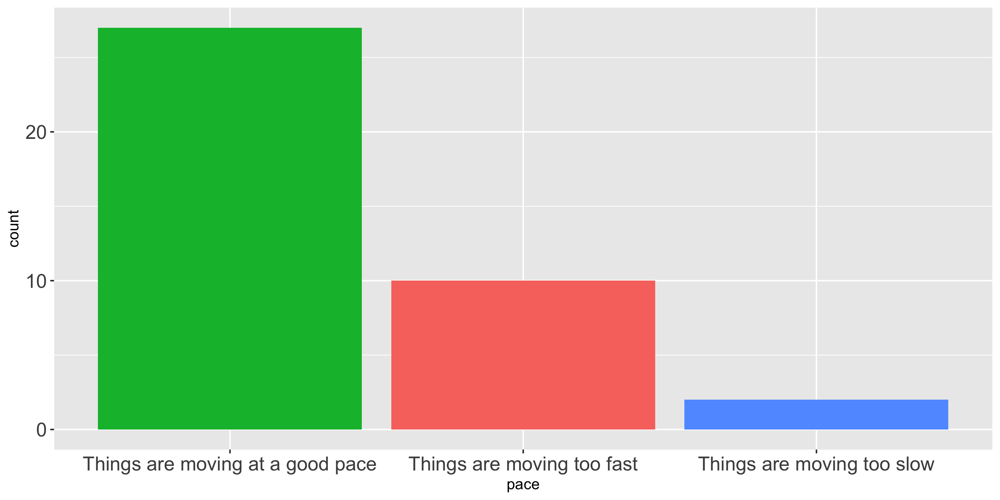
Values of R^2
If \(R^2 \approx 0\): almost none of the variability in response is explained by variability in the explanatory variable.
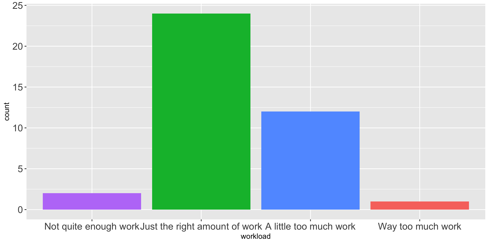
Next Time
- Regression with one categorical variable